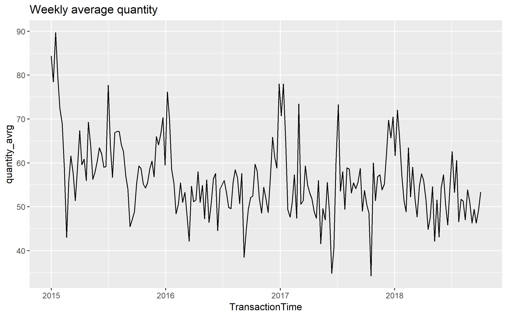
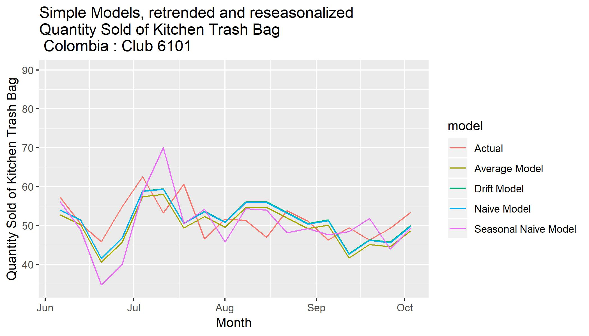
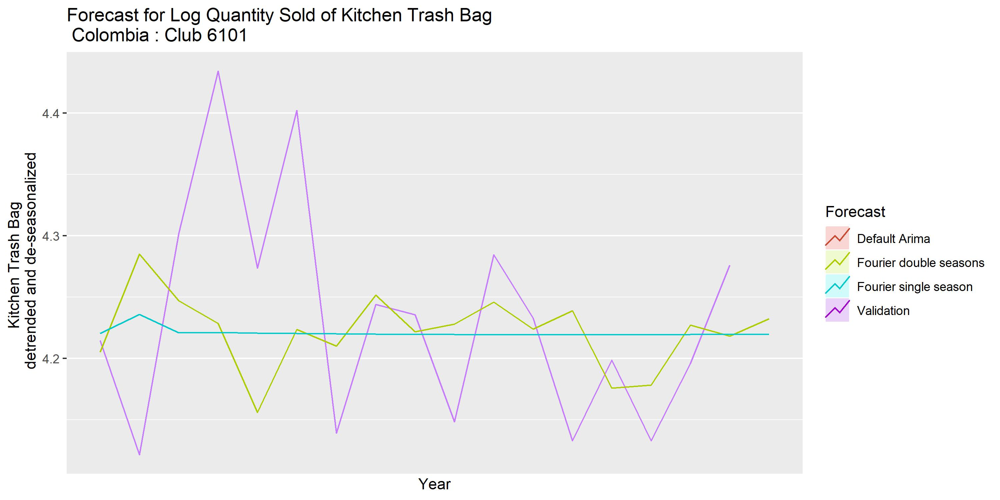
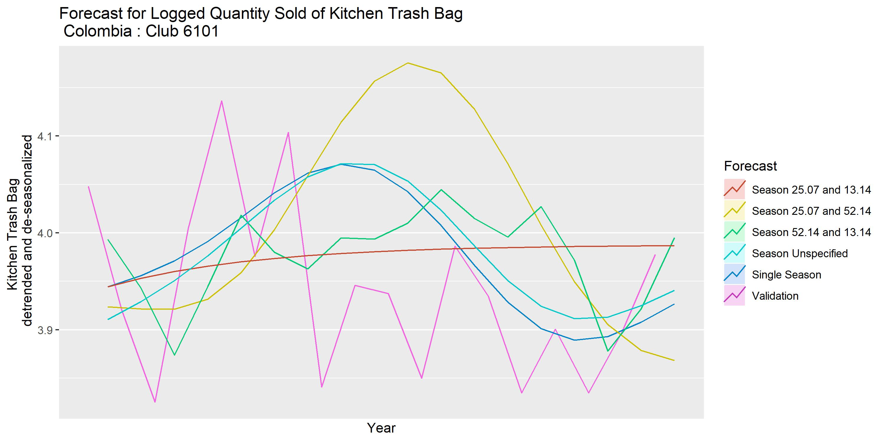
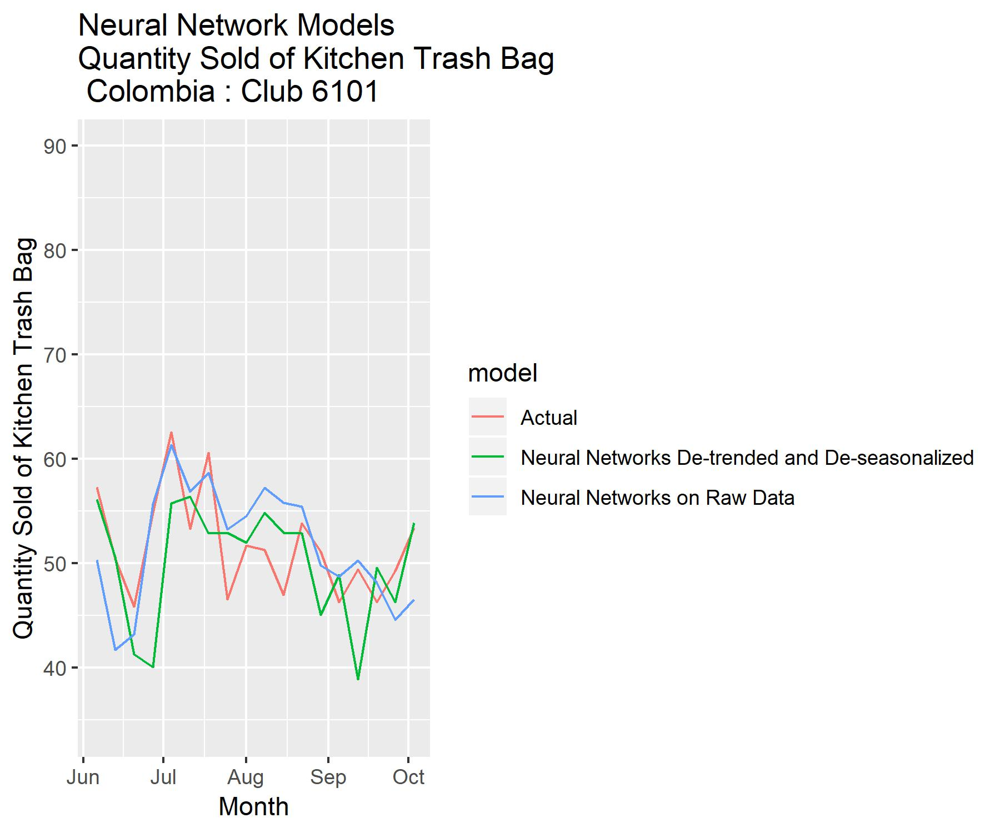

Sales Forecast for a Wholesale Club Using Traditional Time Series and Machine Learning Models
Abstract
I finished this project as an algorithm development intern in a wholesale club. Using historical data on sales, price and exchange rate, this project predicts sales at the weekly level four months into the future. Combining traditional time series methods with machine learning tools, this project is able to cut forecast RMSE by half. However, tremondous space of improment still exists. Currently, machine learning models does not significanty improve the performance of well-developed traditional models. I figure that a larger dataset, with more contectual information is hopeful to make machine learning more powerful. Also, the performance of uni-variate neural network model is satisfactory, and the use of more complex deep learning models will also be key to improving performance.
For code and more visualizations, please see Project page.
The project folder can be found here
Raw data
The project uses two datasets. One contains sales data of one item in one club (store). The other contains data of items combined the category in this store. The first dataset is shown below:
| TransactionDate | ClubNumber | Country | number_transactions | number_members | sales_usd | sales_local | exchange_rate | quantity | item | Description |
| 2015-01-02 | 6101 Colombia | 100 | 97 | 820.5600 | 1963416 | 0.000418000 | 104 | 732578 | Kitchen Trash Bag | |
| 2015-01-03 | 6101 Colombia | 106 | 101 | 986.2600 | 2359875 | 0.000418000 | 125 | 732578 | Kitchen Trash Bag | |
| 2015-01-04 | 6101 Colombia | 22 | 20 | 986.2600 | 2359875 | 0.000418000 | 125 | 732578 | Kitchen Trash Bag |
The second dataset is shown below:
| TransactionDate | Category_Sales_usd | Category_Sales_local | Category_quantity |
| 2015-01-02 | 1783.520 | 4267123 | 251 |
| 2015-01-03 | 1922.930 | 4600721 | 241 |
| 2015-01-04 | 1664.010 | 3980915 | 161 |
Aggregation to weekly level
The target of prediction, namely quantity, are aggregated to weekly level, which is shown in the graph below.

Decomposition
The logged quantity is then de-composed into three parts, namely seasonal, trend and remainder. The seasonal part repeats itself annually.
Uni-variate Models
Simple models
Four simple models, namely naive method, average method, seasonal naïve method and drift method, are used.

ARIMA models
Three simple models, namely simple ARIMA, ARIMA single season and ARIMA double seasons, are used.

TBATS Models
Five TBATS models are used. Their technical details can be found on the Project page.

Neural Network
Two neural network model: one used on raw data and another used on de-trended and de-seasonalized data.
